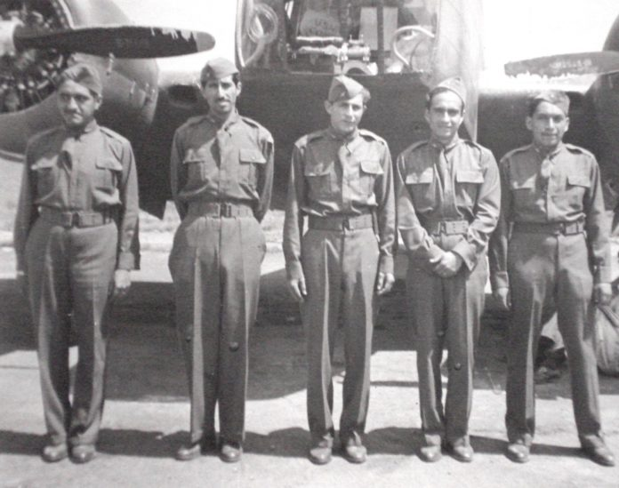

Mexico es un pais que tiene muchos episodios que han marcado, desde nuestras maravillosas culturas prehispanicas, hasta nuestra etapa de liberacion y consolidacion como nacion independiente y la mayoria de los pasajes historicos. fue un hecho el cual estuvo comprometido el honor de nuestro pais y que 300 jovenes supieron enaltecer en el frente de las muchas batallas que se libraron en el pacifico durante la segunda guerra mundial el escuadronvolo como anexo al grupo 58 de combate de la 5 a
, fuerza aerea de los estados unidos en la liberacion de la isla madre de Luzon, durante el verano de 1945.
naturalmente se seleccionaron a los mejores pilotos de la fuerza aerea, recibieron entrenamiento en varias localidades de los estados unidos, el 29 de diciembre de 1944, la camara de cenador autorizo al presidente de la republica el envio de tropas a combatir en el extranjero.El escuadron quedo encuadrado como una unidad mas dentro de la fuerza aerea de los estados unidos, aunque con mando y banderas propias.
